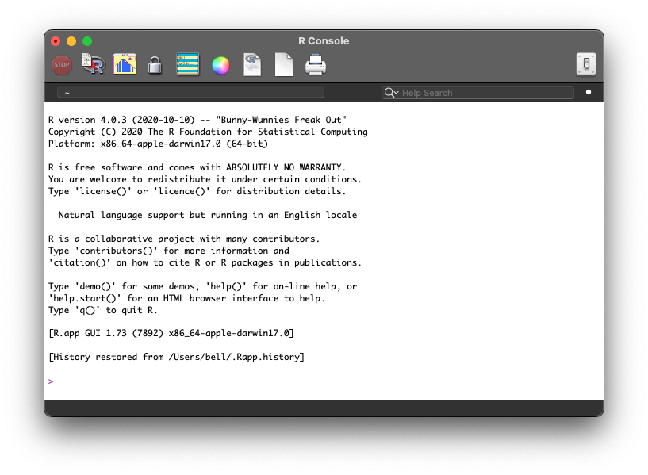
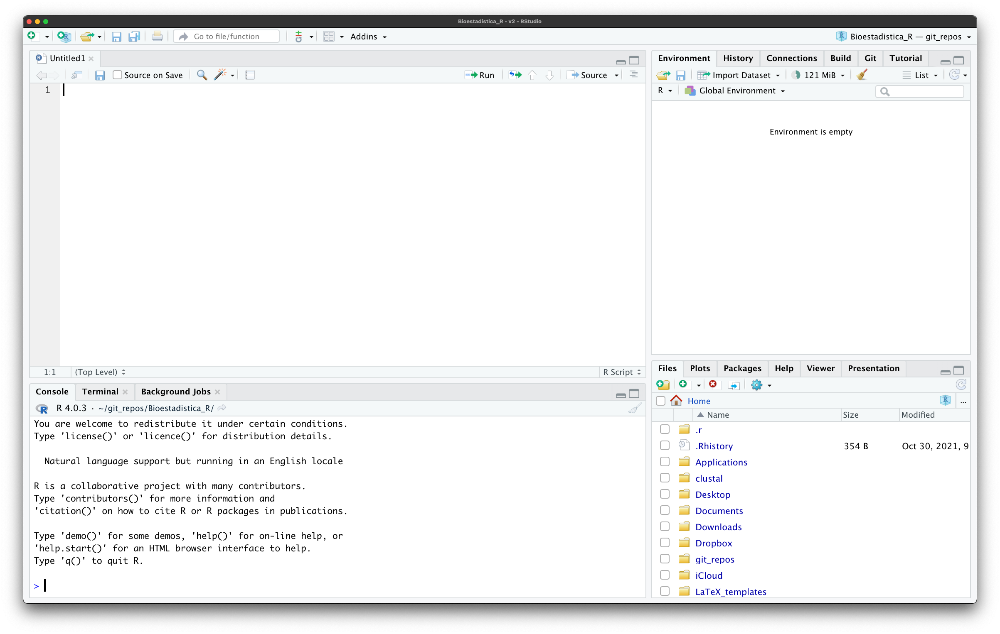
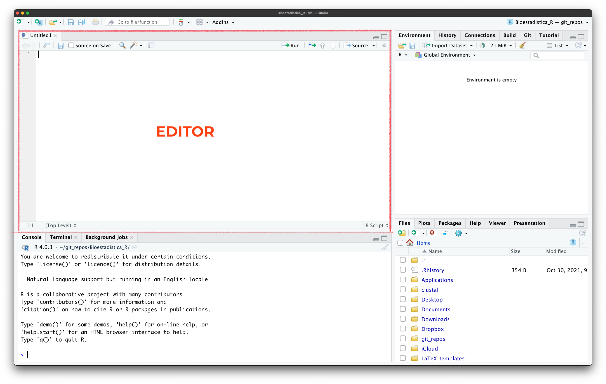
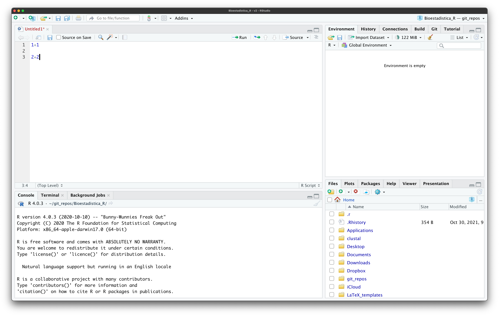
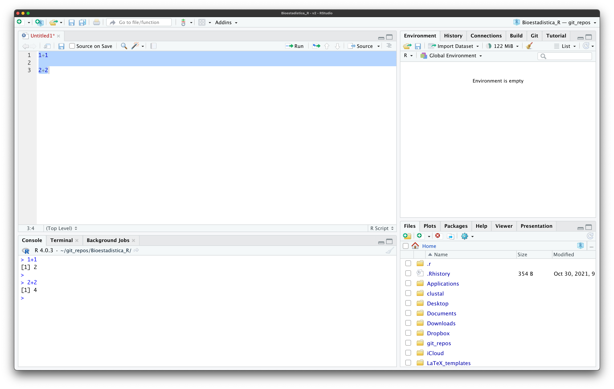
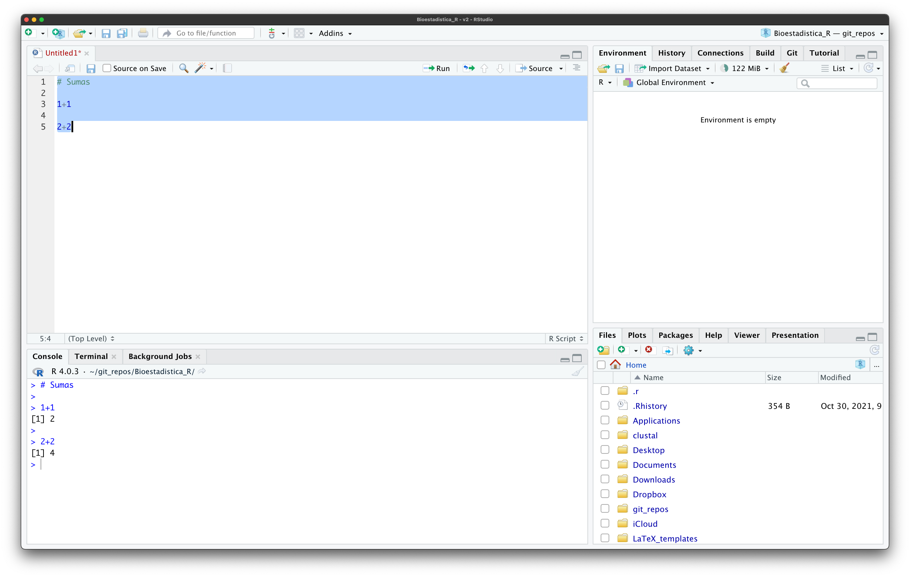
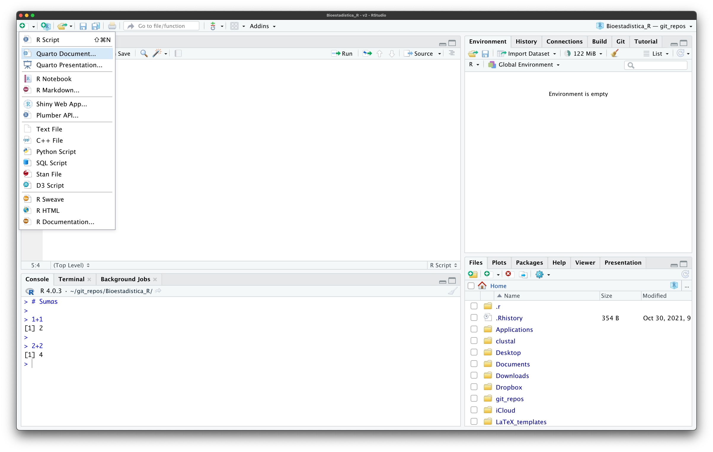
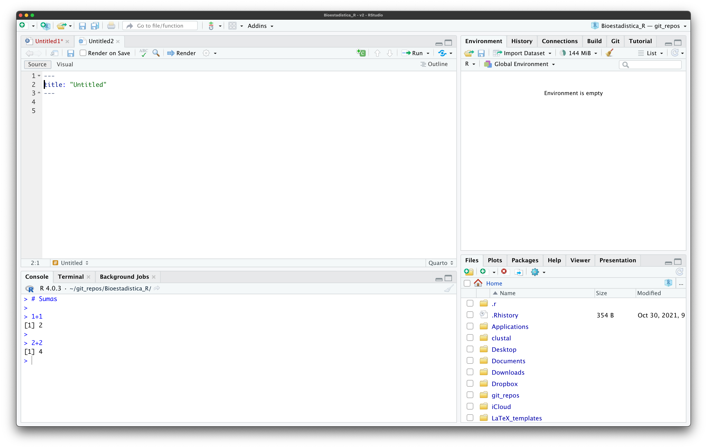

2 Introducción a RStudio y Quarto
En la sesión anterior hablamos de cómo la ciencia de datos nos proveé de las herramientas que necesitamos para poder extraer conclusiones sensibles desde nuestros datos; sin embargo, el análisis de nuestros datos va (o debería ir) mucho más allá de aplicar una prueba estadística y dar a conocer el valor de p correspondiente. El análisis de datos es un proceso, y como científicos debemos de ser capaces de reportar ese proceso de una manera ordenada, transparente y reproducible. Es ahí donde entran RStudio y Quarto (la evolución de RMarkdown), así que antes de entrar propiamente al lenguaje de programación R, hablemos de cómo realizar reportes y cómo podemos aprovechar al máximo la interface que provee RStudio. Te adelanto: si lo utilizas adecuadamente, RStudio (en conjunto con Quarto) puede ser el lugar donde escribas tu tesis, por muy inverosímil que parezca. De hecho, este sitio fue construido utilizando ambas cosas. Sin más preámbulo, comencemos por hablar de qué es RStudio.
2.1 R vs. RStudio
Antes de volar y pretender formar un sitio web o una tesis, comencemos hablando de RStudio. En la sección de preparación instalamos tres cosas diferentes: R, RStudio, y Quarto. Olvidemos a este último por un momento y centrémonos en los dos primeros. R es un lenguaje de programación. Como tal, se ejecuta en consola, ya sea el terminal (macOS/Linux) o el interpretador de comandos cmd en Windows. Lo único que veremos si abrimos/ejecutamos R per-se es una ventana como la siguiente:

Es decir, solamente veremos nuestra consola, compuesta por una descripción de la versión de R que estamos utilizando y un prompt (el símbolo >) que nos presiona a darle a la computadora una instrucción. Más allá de ser una interfaz extremadamente simple, no está pensada para el desarrollo de reportes como los que nosotros realizamos. No podemos escribir texto libre, ni tampoco podemos guardar nuestro progreso. Para eso habría que abrir un script, pero hay una mejor alternativa que nos permite hacer eso y mucho más: RStudio. Por el momento hasta aquí vamos a llegar con R, pero no te preocupes, le vamos a dedicar mucho más tiempo posteriormente.
2.2 El IDE RStudio
Mientras que R es un lenguaje de programación ejecutable en consola, RStudio es un ambiente gráfico de desarrollo (IDE). ¿Qué significa? Que es una interfaz gráfica que nos permite no solo ejecutar nuestro código línea a línea, sino que también incluye otros páneles que nos facilitan enormemente la existencia y, además, abre otras puertas para la creación de documentos como este libro. Vayamos por partes.
2.2.1 La ventana de RStudio
Al abrir RStudio por primera vez te vas a topar con una ventana como la siguiente:

Ya sé, ya sé, no se ve mucho más amable que la ventana de R. Es más, se ve mucho más intimidante porque ahora tenemos la consola y otros 3 espacios. Al ser un IDE, RStudio incluye elementos gráficos para todo lo que pudiéramos llegar a necesitar mientras desarrollamos nuestros análisis, entonces vamos a descomponer esta ventana panel por panel, de arriba a abajo y de izquierda a derecha.
2.2.2 El editor
El primer panel es el editor:

Este es, como el nombre sugiere, un editor de textos, que no debemos de confundir con procesador de palabras (i.e., Word o similares). En él vamos a poder escribir sripts o libretas que contengan la serie de pasos que realizamos durante nuestro análisis. Cada una de las pestañas en este panel es siempre un documento de texto simple, independientemente de si es un script o una libreta. Esto tiene varias ventajas, pero la más importante es que nos podemos llevar esos archivos a cualquier computadora y estar bastante seguros de que podremos, cuando menos, ver su contenido y editarlo sin preocuparnos por problemas de compatibilidad entre versiones del software o, peor aún, sistemas operativos (*ejem* Word *ejem*). Estos archivos de texto simple pueden, dependiendo del tipo de archivo, enviar instrucciones a R.
2.2.3 La consola
El siguiente panel es la consola:
Este panel es, literalmente, lo que veíamos al abrir R en sí mismo; es decir, un espacio donde tenemos nuestro prompt y donde se ejecutarán nuestras instrucciones o líneas de comandos. Notarás que hay otras tres pestañas: una llamada Terminal, y otra llamada Background Jobs. Estas son interfaces a la terminal del sistema y a los trabajos que estemos ejecutando en segundo plano. Nuestra interacción con estas dos pestañas va a ser limitada, salvo que realicemos algo muy especializado. En el curso solo entraremos ocasionalmente al Terminal.
2.2.4 Scripts y sus limitaciones
Antes de pasar al siguiente panel es importante hablar de los scripts y las libretas, e intentar hacer un poco de labor de convencimiento. Si has tenido un acercamiento previo a R/RStudio, es bastante probable que estés familiarizado e incluso acostumbrado a trabajar con scripts. Si no, un script de R es un archivo de texto con extensión .R en el que ponemos nuestro código línea a línea. Pensemos en un ejercicio en el que queremos primero sumar 1 y 1, y luego 2 y 2. Nuestro script en RStudio se vería así:

Solo tenemos el código, no tenemos los resultados. ¿La razón? Aún no le hemos dicho a la computadora que queremos que las ejecute. ¿Cómo le decimos? Tenemos dos formas:
Ejecutar el
scriptlínea a línea, para lo que debemos posicionar nuestro cursor (dar click) sobre la línea a ejecutar, utilizar el atajo de tecladoCMD + Ren macOS/Linux oCTRL + Ren Windows, o dar click sobre el botónRunque está cerca de la esquina superior derecha del panel.Ejecutar el
scriptcompleto, para lo que seleccionaríamos todo su contenido y utilizaríamos el mismo atajo de teclado o botón que antes.
Sea cual sea la opción que hayas escogido, la salida (el resultado) aparecerá en la consola:

¿Cuál es el problema? El primero es que en el momento en el que cerremos RStudio esos resultados se van a perder, salvo que los hayamos guardado manualmente en algún lugar. El segundo tiene que ver con una falta de cohesión: el código (las sumas) están por un lado, mientras que los resultados están por otro. El tercero se deriva de los dos anteriores: falta de legibilidad y reproducibilidad. No podemos hacer el reporte al mismo tiempo en que analizamos los datos, y si en algún momento volvemos al script debemos de ejecutarlo todo nuevamente para ver los resultados. Suena engorroso, ¿no? Un cuarto problema es que no tenemos descripciones de nuestros resultados. Si ya has trabajado con estos archivos me vas a decir “para eso existen los comentarios”, a lo que yo te respondería que no, los comentarios no son para eso. Si no has trabajado con R ni ningún otro lenguaje de programación te preguntarás qué es un comentario. Bien, un comentario es un fragmento de texto no ejecutable; es decir, es algo que podemos escribir y pasarle a la consola pero que no se va a ejecutar. En R estos están dados por el operador #. Agreguemos un comentario a nuestro script con la palabra “Sumas” y ejecutémoslo todo nuevamente:

Como esperábamos, en la consola no hay una salida asociada a la instrucción # Sumas, por lo tanto puedo usar esos comentarios para describir mis resultados, ¿no? La respuesta es, como en muchas otras cosas, depende. O, mejor dicho, de que se puede, se puede, que debamos hacerlo, es otra historia. Los comentarios tienen la función de describir muy brevemente qué intención tiene el código, no escribir párrafos completos con el reporte de los resultados. Comentarios válidos son agregar al inicio del script quién lo escribió, qué hace el código contenido en él, un medio de contacto, y breves descripciones de qué se hace en cada línea, sin repetir el código en texto simple (no decir # Suma 1 y 1 si el código es 1+1, por ejemplo). Existe otro gran problema el cuál no es obvio en este ejercicio, pero que tiene que ver con la carga de datos en archivos dentro de nuestra computadora (archivos .csv o .xlsx, por ejemplo), pero eso lo veremos en un tema posterior. Por el momento veamos una alternativa que resuelve todos estos problemas.
2.2.5 Libretas y reportes: Quarto
Aquí es donde entran Quarto y las libretas. Al instalar Quarto no instalamos un programa per-se, sino que instalamos una extensión a RStudio que es, y cito textualmente, “un sistema de publicación científica y técnica de código abierto construido sobre Pandoc”, que permite, citando nuevamente: i) crear contenido dinámico no solo con R sino con otros lenguajes de programación; ii) escribir documentos como texto plano; iii) publicar artículos, reportes, presentaciones, sitios web, blogs y libros de alta calidad en formatos HTML, PDF, MS Word, ePUB; y iv) escribir con markdown científico, incluyendo ecuaciones, citas, referencias cruzadas, páneles de figuras, anotaciones, diseños avanzados y más. ¿A que ya suena mejor que los scripts? Sin ir más lejos, todo el material que utilizaremos en este curso fue escrito en RStudio utilizando Quarto, y puedes ver la versión final en el sitio web de acompañamiento. Debido a que explicar Quarto es un tema que merece le dediquemos tiempo y estar más arriba que un subtema de IDE RStudio, vamos a dejarlo de lado por el momento, solo revisemos cómo crear un nuevo documento y las diferencias fundamentales con los scritps. Para crear un documento podemos ir a la barra de herramientas -> File -> New file -> Quarto document, o utilizar el botón correspondiente en la ventana de RStudio:

Al darle click nos va a aparecer la siguiente ventana para personalizar el documento:

Aquí añadirás el título de tu documento y opcionalmente el autor. Por el momento dejaremos todo lo demás tal y como está y daremos click en Create, lo que abrirá una pestaña nueva en el editor:

La pestaña se parece al contenido de un script, la única diferencia es un texto contenido entre ---. A esta parte la podemos identificar como el preámbulo del documento, y es un fragmento de nuestro documento escrito en formato YAML ¿Qué es eso y con qué se come? No te preocupes ahorita por eso, solo necesitas saber ahorita que vamos a desarrollar nuestro trabajo debajo del preámbulo. En la figura Figure 2.11 puedes ver un ejemplo básico de un documento Quarto con el código de nuestras sumas.

Un ejemplo más claro del potencial de Quarto es, nuevamente, el material de este curso. Pero sigamos explorando la ventana de RStudio
2.2.6 El ambiente de trabajo
El siguiente panel es lo que se conoce como el ambiente de trabajo (workspace), que nos da un listado de las cosas que le hemos dado a R para que recuerde (objetos). En la siguiente sesión hablaremos largo y tendido de esto, pero veamos un ejemplo donde, utilizando la consola, le digamos a R que recuerde el resultado de la suma 1 + 1, asignándolo a una referencia que arbitráriamente llamaré suma:
Dos cosas: 1) La asignación se hizo con el operador <-. Esto es sumamente importante, en R guardamos cosas utilizando ese operador y no =. 2) Al ejecutar la línea no obtuvimos el resultado. Esto es porque solo le dijimos que lo recordara, que lo anotara en un post-it, si quieres, no que nos lo mostrara. Si queremos que nos lo muestre solo tenemos que llamarlo por su nombre (ejecutar en la consola):
¿Qué tiene que ver esto con el ambiente de trabajo? Pues ahora ya no está vacío, ya tenemos una entrada en la lista, en donde se muestra el nombre del objeto y su valor. Conforme vayamos creando más objetos, más entradas tendrá esa lista. Prueba a crear un objeto que contenga el texto "Hola mundo" (ojo a las comillas) y dar click en su nombre en el ambiente de trabajo. ¿Qué ocurre?
2.2.7 El ambiente gráfico
El último panel corresponde al ambiente gráfico. Este panel junta varios elementos a los que es más fácil acceder visualmente. La primera pestaña es un explorador de archivos. puedes dar click a cada carpeta para ver sus elementos, crear nuevas carpetas, y mucho más. En este curso no lo utilizaremos más que como una referencia visual de dónde están ubicados nuestros archivos.
La siguiente pestaña nos muestra la serie de gráficos que hemos ido generando. Podemos ejecutar en la consola el comando plot(cars) y verás que el gráfico se muestra en esta pestaña.
En la siguiente pestaña encontraremos un listado de las librerías/paqueterías que tenemos instaladas, sus versiones, una breve descripción de para qué son, así como botones para instalarlas o actualizarlas.
Después tenemos la pestaña de ayuda. Aquí podemos ver, valga la redundancia, ayuda sobre R, pero también sobre funciones en las que estemos interesados. Si queremos ver la ayuda de una función FUN vamos a utilizar el comando ?FUN, tal que:
En la siguiente pestaña tenemos un visor (Viewer), donde tendremos vistas previas de los documentos RMarkdown o Quarto con los que estemos trabajando. Tomando como ejemplo el documento que generamos antes, le daremos click al botón Render con la flecha azul, lo que da como resultado la vista previa en Viewer
La última pestaña es un visor de presentaciones, el cual no utilizaremos en este curso.
2.3 Entra a Quarto
Ahora sí, podemos dedicarle nuestra atención a Quarto. Antes mencioné que era un sistema para la creación de documentos científicos y técnicos, que se instala aparte de R y RStudio (lo hicimos ya en la sesión anterior), y que es sumamente flexible. Vimos también un ejemplo de cómo crear un documento Quarto y un poco de cómo interactuar con él. Ahora entremos a todos los detalles. Retomemos nuestro documento de ejemplo (Figure 2.11).
2.3.1 Preámbulo
El primer elemento es el preámbulo, que mencionamos está en formato YAML y que está contenido entre ---. YAML es un formato de serialización de datos legible por humanos. ¿En castellano? Una lista con niveles de pares de claves:valores que definen los metadatos de nuestro documento. En nuestro ejemplo tenemos:
---
title: "Untitled"
---Es decir, el título que aparecerá en el reporte es "Untitled", tal y como vimos en la vista previa. Esto no tiene mucho sentido, así que cambiémoslo por "Mi primer Quarto" y añadamos una nueva entrada para el autor, tal que:
---
title: "Mi primer Quarto"
author: "Tu nombre"
---Otro elemento que usualmente se agrega en el preámbulo es el formato de salida del documento renderizado; es decir, ya presentado para compartir/imprimir. Mi recomendación es exportar a archivos HTML, salvo que vayas a imprimir el documento (PDF), necesites paginación (PDF de nuevo) o que por alguna desafortunada razón necesites un archivo MS Word. Un HTML lo declaramos tal que:
---
title: "Mi primer Quarto"
author: "Tu nombre"
format:
html:
code-fold: true
---Notarás algunas cosas. La primera es que html está indentado; es decir, no comienza en la misma posición que format. Esto es para indicar que html pertenece a format, al igual que code-fold pertenece a html. La siguiente es, justamente, que agregamos a la lista la entrada code-fold. Esta es una opción que indica si queremos que el código sea colapsable mediante un botón en el archivo final. En este caso, la indicamos como true, por lo que así será. Si no lo quisiéramos así indicaríamos false. Si renderizamos nuestro documento ahora tendremos:
Si tienes curiosidad por saber qué características YAML dieron lugar al libro de acompañamiento, puedes revisar el archivo _quarto.yml.
2.3.2 Markdown
Pasando el preámbulo tenemos una sección de texto libre, con algunas anotaciones para el formato del texto.